Obsah
Francie
Velká Británie
Spojené státy americké
Rusko (SSSR)
Německo a Rakousko
+ Orient
+ Fantazie a dobrodružství
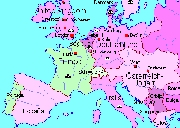
Evropa v roce 1914
|
Světová literatura do roku 1945
Kromě avantgardní literatury se v první polovině 20. století rozvíjí i literatura tradiční a populární. Někteří autoři se obracejí k realismu a používají klasické umělecké prostředky (Remarque, Hemingway, Dreiser...). Jiní naopak experimentují, např. ve způsobu vyprávění a zpracování námětu (Faulkner, Babel, Proust), složitými odkazy k literární tradici (Joyce) nebo míšením realistických prvků s fantastickými (Bulgakov). Tvorba je mnohem více obrazem autorova individuálního uměleckého a lidského vývoje než odrazem vlivu určitého uměleckého směru. V realistické próze se prosadil subjektivismus a hlubinná psychologie. Spisovatele rozděluje i spojuje světový názor a politické přesvědčení, především postoje k válkám, náboženství, demokracii, komunismu, stalinismu, nacismu a fašismu. Důležitý je také postoj diktátorských režimů k nim. Vznikají volná umělecká uskupení a hnutí (PEN klub, Clarté). Literatura pokračuje v překračování tabu, především v oblasti zobrazování erotiky (Lawrence), sexu (Miller) nebo homosexuality (Gide).
Od roku 1901 začalo Švédsko udílet Nobelovu cenu za literaturu.
|
Periodizace
Literatura 20. století se tradičně dělí na období před 1. světovou válkou (1900-1914) a v průběhu 1. světové války (1914-1918), dobu meziválečnou (1918-1939), období 2. světové války (1939-1945) a po 2. světové válce (1945-2000). Tato periodizace je pouze orientační, protože vychází spíše z přelomových událostí politických než z proměn literatury samotné. Řada spisovatelů navíc tvořila ve všech uvedených obdobích. Rok 1945 tedy není absolutním předělem, který by znamenal zásadní zvrat v literatuře.
Které nositele Nobelovy ceny znáš?
|
1. světová válka (1914-1918)
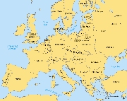
Vítězové 1. světové války narýsovali novou mapu Evropy. Nejdůležitější změnpu po roce 1918 byl rozpad poraženého Rakouska-Uherska na nástupnické státy (Rakousko, Maďarsko, Československo, Jugoslávie) a vznik nových samostatných zemí (Polsko, Litva, Lotyšsko, Estonsko).
|
1. světová válka
Před vypuknutím 1. světové války se zformovala dvě vojenská uskupení – Dohoda (Velká Británie, Francie a Rusko, které roku 1918 uzavřelo s Německem separátní mír) a Trojspolek (Německo, Rakousko-Uhersko a Itálie, kterou před vypuknutím války nahradilo Turecko). Do války se zapojila řada mimoevropských zemí a kolonií. V Evropě měly boje charakter zákopové války. Lokální střety byly nahrazeny frontami. Válčící strany nasadily otravné plyny i moderní techniku. Rozhodující zvrat nastal roku 1917, kdy se k vojskům Dohody připojily Spojené státy americké. Celkový počet mrtvých se odhaduje na 9 milionů vojáků a 6 milionů civilistů.
Někteří nacionalističtí spisovatelé válku nejprve oslavovali. První protiválečný román Oheň napsal Francouz Henri Barbusse. Po skončení 1. světové války se k otřesným zážitkům, které prožili na vlastní kůži, vrátili další autoři – Rolland (Petr a Lucie), Remarque (Na západní frontě klid), Kraus (Poslední dnové lidstva), Hemingway (Sbohem, armádo) nebo Hašek (Osudy dobrého vojáka Švejka za světové války).
|
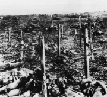
Bitva u francouzského Verdunu
Která událost posloužila jako záminka k rozpoutání 1. světové války?
|
Bolševický puč v Rusku
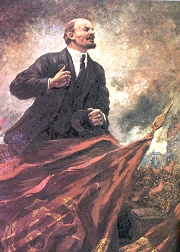
Propagandistický portrét Lenina
|
Komunismus
Učení Karla Marxe se rozhodl naplnit ruský politik Vladimir Iljič Lenin. Postavil se do čela bolševiků a rozpoutal tzv. Říjnovou revoluci (1917). Podařilo se mu dojednat mír s Německem a uzavřít východní frontu, ale rudí pučisté museli čelit obráncům starých pořádků (bělogvardějcům), které podporovali i zahraniční interventi. V občanské válce nakonec bolševici zvítězili. Místo utlačovaného proletariátu se ale k moci dostali straničtí funkcionáři a státní policie rozpoutala nebývalý teror proti vlastnímu obyvatelstvu. Represe se ještě prohloubily, když se moci ujal Josif Vissarionovič Stalin. Komunistický ideál harmonické beztřídní společnosti se v Rusku zvrhl v pravý opak – totalitní režim, který tvrdě potlačoval individualitu i odlišné názory a pro nějž neměl lidský život žádnou hodnotu. Pokusy vyvézt komunistickou revoluci z Ruska do dalších evropských států byly neúspěšné a podařilo se je potlačit už v zárodku, vznikly zde ale komunistické politické strany, které si získaly řadu nespokojených voličů především v době hospodářské krize. Sovětský režim je podporoval a prostřednictvím Komunistické internacionály (1919) fakticky řídil.
|
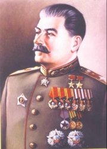
Stalin
Jaký je rozdíl mezi komunou, komunardem, komunistou a komunismem?
|
Nacistický převrat v Německu
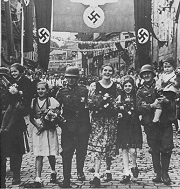
Nacistická propagandistická fotografie
|
Nacismus a fašismus
V poválečné Evropě se postupně prosadily diktatury postavené na nacionalismu. V Itálii se chopil moci fašistický diktátor Benito Mussolini, v Německu to byl Adolf Hitler, ve Španělsku generál Franco atd. Pouze Francie, Československo a severské země zůstaly do svého obsazení Německem demokraciemi.
Německý nacismus vycházel z rasistické ideologie o nadřazenosti Árijců (Němců) nad ostatními rasami (národy). Hitler nejprve zbavil Židy občanských práv a pak začal s jejich vyvražďováním v koncentračních táborech. Podobně přistupoval i k Romům, národům na dobytých územích, komunistům nebo odpůrcům nacismu. Chtěl ovládnout celý svět, a proto rozpoutal 2. světovou válku. K Hitlerovi se připojila Itálie, Japonsko a další země. Čelil mu Sovětský svaz, Velká Británie a USA.
|
Jaký je rozdíl mezi nacismem, nacionalismem a vlastenectvím?
|
Věda a technika
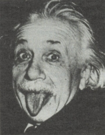
Albert Einstein
|
Věda a technika
Ve 20. století pokračuje bouřlivý rozvoj přírodních věd. Nejvíce pokročilo zkoumání mikrosvěta (elementární částice, bakterie, viry...) a vesmíru (astrofyzika). Symbolem této doby se stal autor teorie relativity Albert Einstein. Běžné byly elektrické přístroje (osvětlení, telefon, gramofon, radiopřijímač, kinematograf...) či stroje se spalovacím motorem (automobily, letadla...).
Také společenské vědy přinesly zásadní objevy v sociologii (Weber), ekonomii (Keynes), psychologii (Freudova psychoanalýza, Watsonův behaviorismus), pedagogice (Steiner, Freinet, Montessoriová...) nebo jazykovědě (Saussure). Praktickými otázkami života se zabývá filozofický pragmatismus. Jeho zakladatelé Američané William James a John Dewey soustředili svou pozornost na čin a lidskou aktivitu. Prostějovský rodák Edmund Husserl je považován za zakladatele fenomenologie.
|
Které objevy přinesla 1. polovina 20. století?
Co víš o pragmatismu a fenomenologii?
|
Výtvarné umění
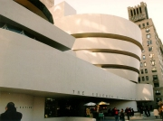
Wright: Guggenheimovo muzeum, New York
|
Architektura, malířství, sochařství
Převrat v umělecké tvorbě přinesly avantgardní směry. Nehlásili se k nim ale všichni autoři. V sochařství vynikl Američan Henry Moore, v malířství naivní umělec Henry Rousseau nebo Rus Mark Chagall. S optickými klamy experimentoval M. C. Escher. V totalitních zemích stát podporoval umělce, kteří se věnovali propagandistické tvorbě. Ostatní tvůrci byli naopak pronásledováni a jejich díla cenzurována. Běžným stavebním materiálem se stal beton. Ve Spojených státech amerických se začaly stavět mrakodrapy. Nejoriginálnějším architektem byl Frank Lloyd Wright.
|
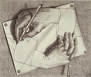
Escherova kresba
|
Abstraktní umění
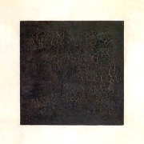
Malevič: Černý čtverec na bílém pozadí
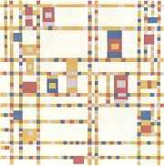
Mondrian: Broadwayské boogie-woogie
|
Abstraktní umění
Průkopníkem abstrakce byl český malíř František Kupka. Spisovatel Apollinaire nazval toto umění orfismus. Podstatou abstraktního umění je, že nezobrazuje vnější předmětný svět, ale vyjadřuje se autonomními výtvarnými prostředky jako barva, tvar, linie, objem nebo struktura. Proto se někdy nazývá nepředmětné nebo nefigurativní umění. Geometrizující abstrakci se věnoval ruský malíř Kazimír Malevič, zakladatel suprematismu, nizozemský výtvarník Piet Mondrian, tvůrce neoplasticismu, nebo francouzský orfista Robert Delaunay. Můžeme sem zařadit rovněž avantgardní tvorbu konstruktivistů. Lyrickou abstrakcí se zabývali čeští umělci Štyrský a Toyen, tvůrci artificialismu. Vasilij Kandinskij nebo František Kupka měli blízko k oběma proudům – geometrické i lyrické abstrakci. Při tvorbě svých kompozic se nechávali inspirovat hudbou.
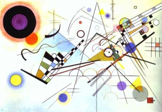
Kandinskij: Kompozice VIII
|
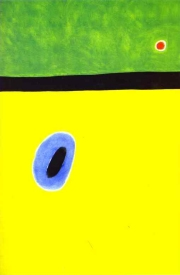
Miró: Křídlo skřivana obklopené zlatomodrou aureolou dolétá k srdci vlčího máku, jenž spí na louce vyzdobené démanty
Který z obrazů se ti líbí nejvíce? Proč?
Co si myslíš o abstraktním umění?
|
Fotografie a kinematografie
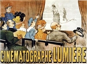
Plakát k první grotesce Pokropený kropič
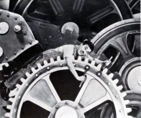
Král komiků Charles Chaplin
|
Od fotografie k filmu
Anglický fotograf Eadweard Muybridge dokázal zachytit jednotlivé fáze pohybu. Přelom ale přišel až s vynálezem bratrů Lumièrových. Ti roku 1895 zkonstruovali kinematograf, který byl zároveň kamerou i projektorem. Nový přístroj se z Francie brzy rozšířil do celého světa. V USA vznikla velká filmová studia v Hollywoodu a síť promítacích sálů. Návštěva biografu se stala populární zábavou. Natáčely se především grotesky a k nejslavnějším filmovým hercům patřili komikové (Chaplin, Frigo...). Průkopníkem trikového filmu byl Méliès. Němý film byl na konci 20. let vystřídán zvukovým. Ve stejné době vznikl také film animovaný a barevný.
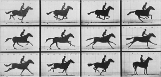
Eadweard Muybridge: Kůň v pohybu
|
Vliv kinematografie si brzy uvědomil Lenin i Hitler, kteří začali film zneužívat k propagandě svých režimů. V nacistickém Německu dostala k dispozici obrovské prostředky režisérka Leni Riefenstahlová, autorka „dokumentů“ Olympia a Triumf vůle. K protižidovské propagandě byl zneužíván film hraný (Žid Süss) i animovaný.
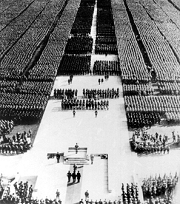
Riefenstahlová: Triumf vůle
|
Hudba
|
Hudba
Vážná hudba začala ustupovat populárnímu jazzu, který se zrodil v Americe. K jeho vrcholným představitelům patřil skladatel George Gershwin. Operu i operetu začaly vytlačovat nenáročné broadwayské muzikály. Nejvýznamnějším novátorem v oblasti vážné hudby byl Rakušan Arnold Schönberg, tvůrce dodekafonie. K významným skladatelům patří rovněž Rusové Alexandr Nikolajevič Skrjabin, Sergej Prokofjev, Dmitrij Šostakovič a Igor Stravinskij, Armén Aram Chačaturjan, člen Pařížské šestky Arthur Honegger, Němec Paul Hindemith, Maďar Béla Bartók nebo Češi Leoš Janáček a Bohuslav Martinů.
|
Která díla uvedených skladatelů znáš? Co o nich víš?
|
Rozhlas
|
Rozhlasové vysílání
Od roku 1920 se začalo v USA prosazovat nové médium. Rozhlas své posluchače hlavně informoval, vzdělával a bavil. Spisovatelé začali psát adaptace klasických děl, speciální rozhlasová dramata a další rozhlasové pořady. Z možností a charakteru rozhlasového vysílání vycházely také další literární nebo hudební pořady. K rozšíření rozhlasových přijímačů došlo velmi rychle. Totalitní režimy začaly toto masové médium záhy využívat k propagandě.
|
Čím se liší rozhlasová hra od divadelního představení?
Kolik rozhlasových přijímačů vlastníš ty a kolik celá vaše rodina?
Která rádia a jaké pořady v nich posloucháš?
|
Internetové stránky
Nobelova cena za literaturu
Nobelova cena za literaturu
PEN klub
Riefenstahlová, režisérka
Riefenstahlová, režisérka
Riefenstahlová, režisérka
Chaplin, komik
Klimeš: Moderní doba, článek
Americké muzeum filmu
Masters of photography
Institut tvůrčí fotografie
Photorevue
Lumièr, filmy
Hudba 20. století
Malevič, suprematista
První světová válka
První světová válka
Trockistický archív
|
Doporučená četba
Bauer, František: Hitlerův Můj boj očima historiků, Univers, Praha 1994
Bullock, Alan: Hitler a Stalin, Paralelní životopisy, Mustang, Plzeň 1995
Einstein, Albert: Jak vidím svět, přel. H.Karlach, NLN, Praha 1993
Ejzenštějn, Sergej: Paměti, přel. Žákovi, Odeon, Praha 1987
Golding, John: Cesty k abstraktnímu umění, přel. J.Ogrocký, Barrister & Principal, Praha 2003
Hitlerův Mein Kampf, přel. J.Hájek, Dialog, Litvínov 1993
Jindra, Zdeněk: První světová válka, Praha 1987
Keegan, John: První světová válka, přel. L.Křížek, Praha 2003
Knopp, Guido: Hitler, přel. H.Karlach, Knižní klub, Praha 1998
Knopp, G.: Hitlerova mládež, Ztracená generace, přel. M.Churaň, Euromedia Group, Praha 2003
Navrátil, Miloš: Dějiny hudby, Votobia, Praha 2003
Pijoan, José: Dějiny umění, 9., 10. a 11. díl
Přerušený ráj, Antologie moderní italské poezie, přel. V.Mikeš, ČSS, Praha 1967
Radzinskij, Edvard Stanislavovič: Stalin, Zevrubný životopis založený na nových dokumentech z ruských tajných archivů, přel. Nováková, Mladá fronta, Praha 1998
Riefenstahlová, Leni: V mé paměti, přel. Křiklánová, Navrátil, Prostor, Praha 2002
Stern, Josef Petr: Hitler – vůdce a lid, přel. V.Jochman, Lidové noviny, Praha 1992
Suchý, Ondřej: Exkurze do království grotesky, Práce, Praha 1981
Šklovskij, Viktor: Ejzenštějn, přel. J.Zumr, Odeon, Praha 1983
Toeplitz, Jerzy: Dějiny filmu, přel. R.Vyhlídal, Panorama, Praha 1989
Veber, Václav: Stalin, Stručný životopis, Karolinum, Praha 1996
Winter, J.M.: První světová válka, přel. J.Hrbek, Mladá fronta, Praha 1995
|
Vypracuj písemný referát o některé z uvedených knih.
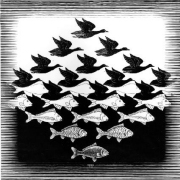
Escher: Nebe a voda
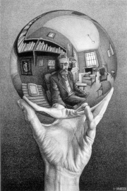
Escher: Portrét
|
|